Montgomery Travel Guide
Historic capital city distinguished by pivotal civil rights landmarks, riverfront entertainment, and enduring Southern cultural traditions.
Places to See in Montgomery
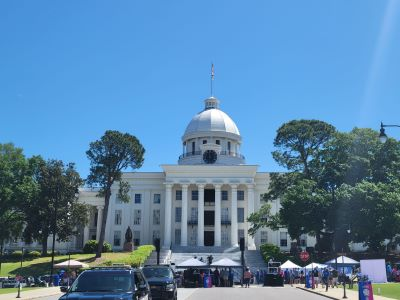
Dough4872, CC BY-SA 4.0, via Wikimedia Commons; Image Size Adjusted

Alabama State Capitol
Greek Revival government building and working museum featuring restored legislative chambers, murals, and historic grounds central to Alabama’s political legacy.

Dough4872, CC BY-SA 4.0, via Wikimedia Commons; Image Size Adjusted
Blount Cultural Park
Expansive landscaped park inspired by the English countryside, featuring museums, theaters, walking trails, and a dedicated dog park.
Dough4872, CC BY-SA 4.0, via Wikimedia Commons; Image Size Adjusted
Civil Rights Memorial Center
Interactive museum and memorial honoring civil rights martyrs and promoting justice through exhibits, film, and the powerful Wall of Tolerance.
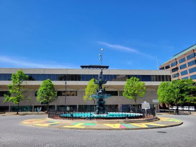
Dough4872, CC BY-SA 4.0, via Wikimedia Commons; Image Size Adjusted
Court Square Fountain
Cast iron fountain topped with a statue of Hebe, marking the historic center of Montgomery and surrounded by landmarks of the city’s civil rights and antebellum past.
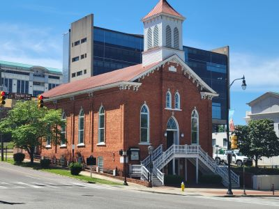
Dough4872, CC BY-SA 4.0, via Wikimedia Commons; Image Size Adjusted
Dexter Avenue King Memorial Baptist Church
Historic church where Dr. Martin Luther King Jr. began his pastoral leadership and helped organize the Montgomery Bus Boycott from his basement office.
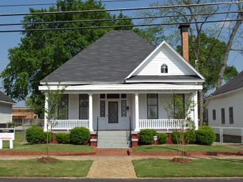
Dough4872, CC BY-SA 4.0, via Wikimedia Commons; Image Size Adjusted
Dexter Parsonage Museum
Restored clapboard residence where Dr. Martin Luther King Jr. lived during the Montgomery Bus Boycott, now a museum with exhibits and a reflection garden.
Dough4872, CC BY-SA 4.0, via Wikimedia Commons; Image Size Adjusted
Flame of Freedom
Granite and bronze war memorial honoring Alabama veterans of World War I, World War II, and the Vietnam War, located near the State Capitol.
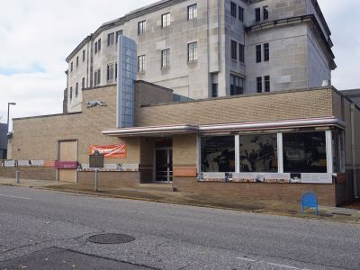
Dough4872, CC BY-SA 4.0, via Wikimedia Commons; Image Size Adjusted
Freedom Rides Museum
Historic museum housed in a restored 1940 Greyhound bus station that interprets the 1961 Freedom Rides through exhibits, oral histories, photographs, artwork, and architecture.
Dough4872, CC BY-SA 4.0, via Wikimedia Commons; Image Size Adjusted
Legacy Museum
Immersive museum experience exploring the history of racial injustice in America through interactive exhibits, archival materials, and powerful storytelling.
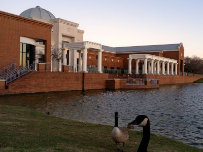
Dough4872, CC BY-SA 4.0, via Wikimedia Commons; Image Size Adjusted
Montgomery Museum of Fine Arts
Expansive art museum featuring American paintings, decorative arts, and a sculpture garden, offering free admission and interactive family-friendly exhibits.
Dough4872, CC BY-SA 4.0, via Wikimedia Commons; Image Size Adjusted
Museum of Alabama
Interactive museum chronicling Alabama’s history from prehistoric times to the present through immersive exhibits, artifacts, and family-friendly learning spaces.
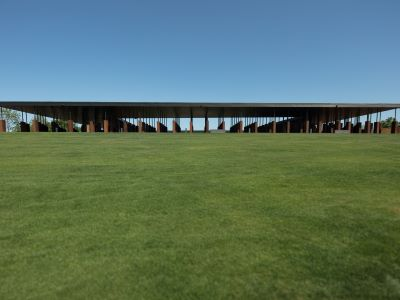
Dough4872, CC BY-SA 4.0, via Wikimedia Commons; Image Size Adjusted
National Memorial for Peace and Justice
Six-acre memorial site featuring over 800 steel monuments honoring victims of racial terror lynchings, designed for reflection, education, and remembrance.
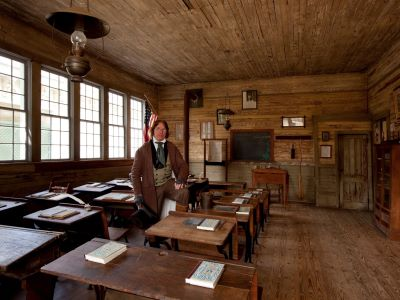
Dough4872, CC BY-SA 4.0, via Wikimedia Commons; Image Size Adjusted
Old Alabama Town
Restored 19th and early 20th-century buildings showcasing Alabama’s architectural and cultural heritage through immersive, self-guided and guided tours.
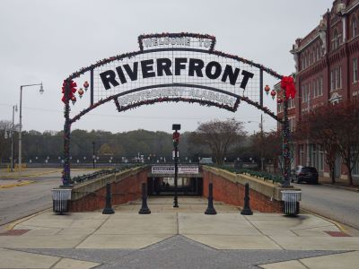
Dough4872, CC BY-SA 4.0, via Wikimedia Commons; Image Size Adjusted
Riverfront Park
Scenic riverside park offering concerts, riverboat cruises, a splash pad, amphitheater, and dog park in a vibrant downtown setting.
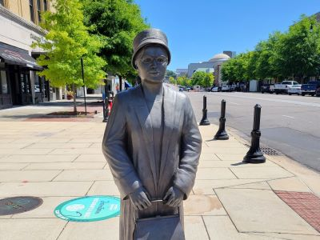
Dough4872, CC BY-SA 4.0, via Wikimedia Commons; Image Size Adjusted
Rosa Parks Bus Stop
Outdoor historical site featuring a statue and commemorative plaque honoring the pivotal moment that sparked the Montgomery Bus Boycott and advanced the Civil Rights Movement.
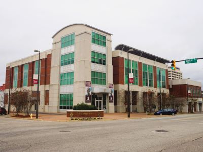
Dough4872, CC BY-SA 4.0, via Wikimedia Commons; Image Size Adjusted
Rosa Parks Museum
Interactive museum honoring the legacy of Rosa Parks and the Montgomery Bus Boycott through immersive exhibits, historical artifacts, and educational programs.
Overview
Montgomery is the capital of Alabama, on the Alabama River in the central part of the state, and it is known as the "Cradle of the Confederacy" and the "Birthplace of the Civil Rights Movement." It was the first capital of the Confederacy in 1861, and nearly a century later it was the site of the Montgomery Bus Boycott, which began when Rosa Parks refused to give up her seat on a city bus in 1955, and the end of the Selma to Montgomery march in 1965. Today the city is a center for state government, military bases, and heritage tourism.
Visitors come to Montgomery for the Legacy Museum and the National Memorial for Peace and Justice, which tell the history of slavery, segregation, and racial terror, and for the Rosa Parks Museum, the Dexter Avenue King Memorial Baptist Church, and the Freedom Rides Museum. They also come for the Alabama State Capitol, the Hank Williams Museum, and Old Alabama Town.
History
Montgomery was founded in 1819 and named for General Richard Montgomery, a Revolutionary War hero, and it became the state capital in 1846. In February 1861, Jefferson Davis was inaugurated as the first president of the Confederate States on the steps of the Alabama State Capitol, and the city served as the Confederate capital until it was moved to Richmond. In December 1955, Rosa Parks was arrested for refusing to give up her seat on a bus, launching a 381-day boycott led by Dr. Martin Luther King Jr., who was pastor at Dexter Avenue Baptist Church. In 1965, thousands of marchers walked from Selma to the Capitol steps to demand voting rights. The city has since worked to remember this history, with the opening of the Legacy Museum and the National Memorial for Peace and Justice in 2018.
Sightseeing and Popular Landmarks
The Alabama State Capitol, a Greek Revival building at the top of Dexter Avenue, is a National Historic Landmark and offers free tours. The Dexter Avenue King Memorial Baptist Church and the Dexter Parsonage Museum, where the Kings lived, are nearby, and the Rosa Parks Bus Stop marks the site of her arrest. The Court Square Fountain and Riverfront Park are downtown landmarks, and the Flame of Freedom is a civil rights memorial.
Culture and Museums
The Legacy Museum and the National Memorial for Peace and Justice, built by the Equal Justice Initiative, are among the most powerful memorials in the country, and the Civil Rights Memorial Center honors those who died in the movement. The Rosa Parks Museum, the Freedom Rides Museum, and the Hank Williams Museum are other museums. The Montgomery Museum of Fine Arts and the Museum of Alabama are in Blount Cultural Park, along with the Alabama Shakespeare Festival theater.
Parks
Blount Cultural Park has a lake, walking trails, and the Shakespeare Festival theater, and Riverfront Park has an amphitheater and a boat ride on the Alabama River. Oak Park, Gateway Park, and the Montgomery Zoo are other places to relax, and nearby Lake Jordan and Lake Martin offer boating and fishing. Maxwell Air Force Base, where the Wright brothers established a flight school in 1910, is also in Montgomery.
Seasons and Weather
Montgomery has a humid subtropical climate. Summers are hot and humid, with highs in the 90s°F, and winters are mild, with highs in the 50s°F and almost no snow. Spring and fall are the best seasons for walking tours, and thunderstorms and occasional tornadoes are possible in spring.
This article uses material from Wikipedia as well as information from official tourism and institutional sources. Key references include Visit Montgomery, Equal Justice Initiative Legacy Sites, Rosa Parks Museum, Alabama Department of Archives and History, National Park Service Selma to Montgomery National Historic Trail, and National Weather Service Birmingham. Wikipedia material is from the articles "Montgomery, Alabama" and "Montgomery bus boycott", and is available under the Creative Commons Attribution-Share-Alike License 3.0.